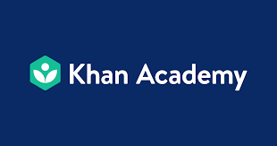
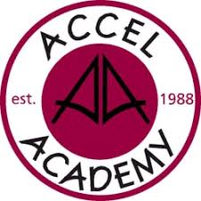

Job and Internship Resources!
Workready helps the youth find jobs and helps them connect to jobs.
Manage your professional identity. Build and engage with your professional network. Access knowledge, insights and opportunities.
Zety is a website you can go on and practice resume building. You can practice buiding your resume. They have many templates you can pratice on.
College Resources!
Online SAT Prep

Khanacademy has a goal of creating a set of online tools that help educate students. The organization produces short lessons in the form of videos. Its website also includes supplementary practice exercises and materials for educators.
Kaplan offers test prep, license and certification exam prep, degree programs, English learning and pathway programs.
Philadelphia SAT Prep
Sylvan of Philadelphia's SAT prep program will help your son or daughter manage the pressure, feel confident on test day and raise those crucial SAT scores.

Accel Academy is a state-certified, accredited private school that offers Middle School and High School Math and English Enrichment Programs, College Test Prep Programs (SAT I & II), and ESL/TOEFL Programs.
New Jersey SAT Prep
New Jersey SAT/ACT Test Prep Courses: Proven SAT/ACT Test Preparation Skills
Delaware SAT Prep

A good SAT/ACT prep program/classes/courses in Delaware. Y2academy supports students in achieving exceptionally high scores on their Official SAT Test.
Collegeboard!
Collegeboard develops and administers standardized tests and curricla used by K-12 and post-secondary instsitutions to promote college readiness and as a part of the college admissions process.
Naviance!

Online Virtual Tours of Colleges!
YouVisit is an online virtual college tour for more than 600 colleges. Search up any college and view their online virtual college tour.
Pennslyvania,New Jersey, Delaware College Open Houses!

List of Colleges In Pennslyvania, New Jersey,and Delaware. On this website it has the numbers to each colleges in Pennslyvania and the open houses dates for colleges.